Deep learning: multi-layer NNs
Lviv University
Neural Network Representation
Deep networks
Suppose we have this network:
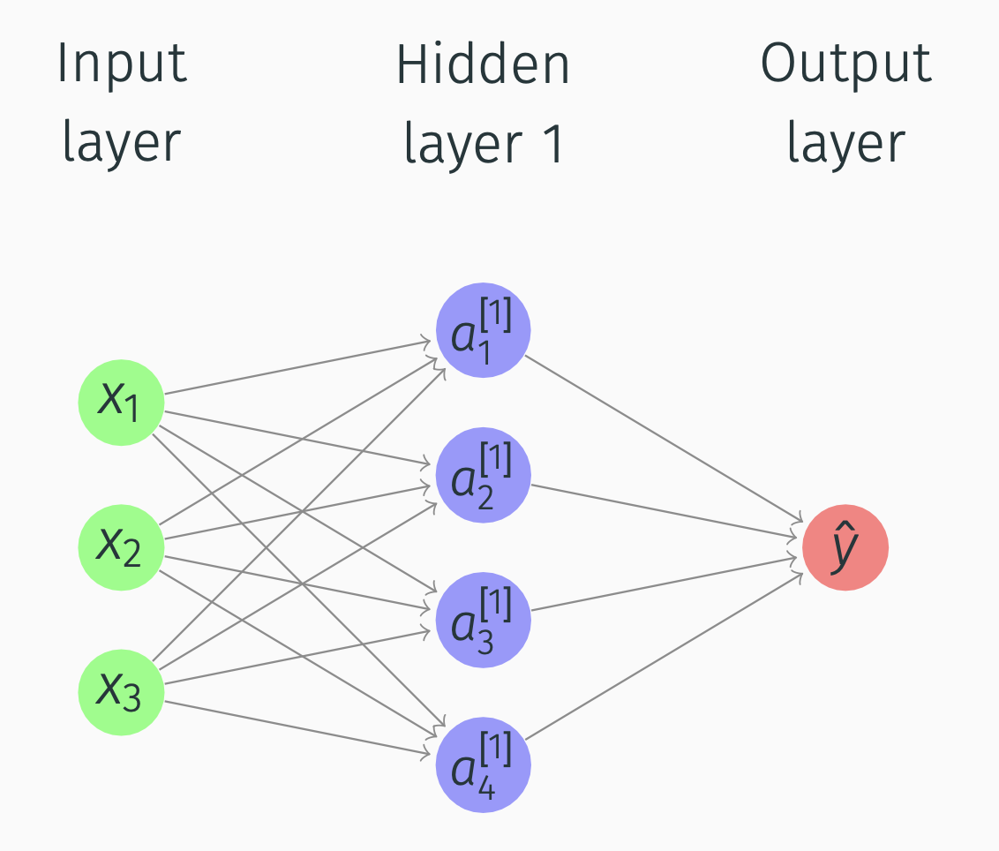Deep Networks
What happens in Hidden layer 1 and Output layer?
We will use this notation: \[\begin{align*} & z^{[1]} = W^{[1]}x+b^{[1]} \\ & a^{[1]} = \sigma(z^{[1]})\\ & z^{[2]} = W^{[2]}a^{[1]}+b^{[2]} \\ & a^{[2]} = \sigma(z^{[2]}) \end{align*}\] And then we compute \(L(a^{[2]}, y)\).
And then, similarly, for backpropagation, we will compute \(da^{[2]}, dz^{[2]}, dW^{[2]}\).
Deep Networks
Alternative notation: \(a^{[0]} = x\). So in the picture \[\begin{align*} a = \begin{bmatrix} a_1^{[1]} \\ a_2^{[1]}\\ a_3^{[1]}\\ a_4^{[1]} \end{bmatrix} \end{align*}\] 2-layer network (input layer not counted). Input layer is layer 0.
Deep Networks
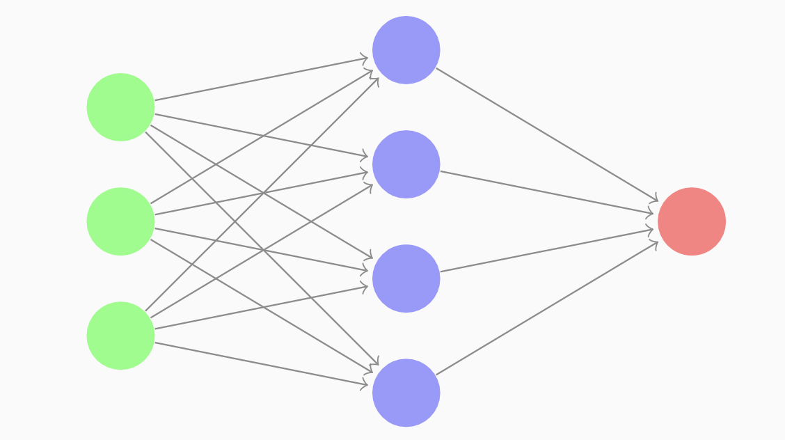First hidden layer params
- \(W^{[1]}\) ((4,3) matrix)
- \(b^{[1]}\) ((4,1) matrix).
Second hidden layer params
- \(W^{[2]}\) is a (1,4) matrix
- \(b^{[2]}\) is a (1,1) matrix.
Deep Networks
For all nodes: \[\begin{align*} & z_1^{[1]} = W_1^{[1]T}x + b_1^{[1]},\; & a_1^{[1]} = \sigma(z_1^{[1]}), \\ & z_2^{[1]} = W_2^{[1]T}x + b_2^{[1]},\; & a_2^{[1]} = \sigma(z_2^{[1]}), \\ & z_3^{[1]} = W_3^{[1]T}x + b_3^{[1]},\; & a_3^{[1]} = \sigma(z_3^{[1]}), \\ & z_4^{[1]} = W_4^{[1]T}x + b_4^{[1]},\; & a_4^{[1]} = \sigma(z_4^{[1]}) \end{align*}\] So, if we have \(a_i^{[l]}\), then \(l\) means layer, and \(i\) means node number in a layer.
Deep Networks
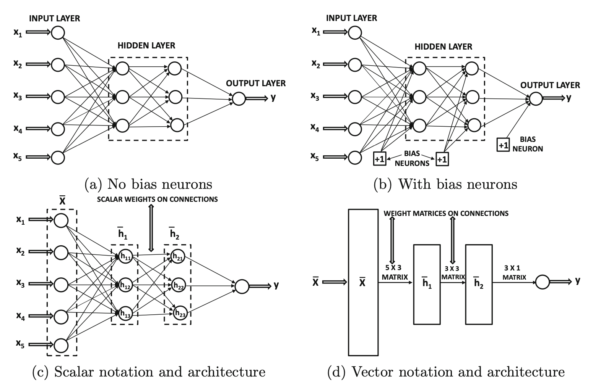Deep Networks
For \(m\) training examples, we compute \(x^{(m)} \rightarrow a^{[2](m)} = \hat{y}^{(m)}\).
The block of code:
for i = 1 to m:
\[\begin{align*} &z^{[1](i)} = W^{[1]}x^{(i)}+b^{[1]},\\ &a^{[1](i)} = \sigma(z^{[1](i)}),\\ &z^{[2](i)} = W^{[2]}a^{[1](i)}+b^{[2]},\\ &a^{[2](i)} = \sigma(z^{[2](i)}) \end{align*}\]
Deep Networks
How do we vectorize it across multiple training examples? We compute by going to matrices: \[\begin{align*} &Z^{[1]} = W^{[1]}X+b^{[1]},\; &A^{[1]} = \sigma(Z^{[1]}),\\ &Z^{[2]} = W^{[2]}A^{[1]}+b^{[2]},\; &A^{[2]} = \sigma(Z^{[2]}) \end{align*}\]
\[\begin{align*} &Z^{[1]} =\begin{bmatrix} \vdots & \vdots & \dots & \vdots \\ z^{[1](1)} & z^{[1](2)} & \dots & z^{[1](m)} \\ \vdots & \vdots & \dots & \vdots \end{bmatrix},\\ &A^{[1]} = \begin{bmatrix} \vdots & \vdots & \dots & \vdots \\ a^{[1](1)} & a^{[1](2)} & \dots & a^{[1](m)} \\ \vdots & \vdots & \dots & \vdots \end{bmatrix} \end{align*}\]
Activation Functions
Sigmoid derivative
\[ \dfrac{d\sigma}{dz} = \sigma(z)(1-\sigma(z)) \]
Tanh derivative
\[ \dfrac{d\tanh}{dz} = 1-(\tanh(z))^2 \]
ReLU derivative
\[\begin{align*} &g'(z) = \begin{cases} 0 , & \text{if } z < 0,\\ 1, & \text{if } z > 0, \\ \text{undefined}, & \text{if } z = 0 \end{cases} \end{align*}\]
Gradient Descent for Neural Networks
Deep Networks
Parameters
Review:
\(W^{[1]}, b^{[1]}, W^{[2]}, b^{[2]}\).
\(n_x = n^{[0]}\), \(n^{[2]} = 1\).
Cost function
In our case will be \[\begin{align*} &J(W^{[1]}, b^{[1]}, W^{[2]}, b^{[2]})= \frac{1}{m}\sum\limits_{i=1}^m L(\hat{y},y). \end{align*}\]
Dimensions for \(W^{[1]}\) are \((n^{[1]}, n^{[0]})\).
Deep Networks
For gradient descent we compute
- \(\hat{y}^{(i)}\)
- \(dW^{[1]} \equiv \dfrac{dJ}{dW^{[1]}}, dB^{[1]} \equiv \dfrac{dJ}{dB^{[1]}}\)
- \(W^{[1]} = W^{[1]} - \alpha dW^{[1]}\)
- \(B^{[1]} = B^{[1]} - \alpha dB^{[1]}\)
Deep Networks
How do we compute the derivatives? \[\begin{align*} &dZ^{[2]} = A^{[2]} - Y,\\ &dW^{[2]} = \frac{1}{m}dZ^{[2]}A^{[1]T},\\ &dB^{[2]} = \frac{1}{m}np.sum(dZ^{[2]}, axis=1, keepdims=True) \end{align*}\]
Deep Networks
Next step: \[\begin{align*} &dZ^{[1]} = W^{[2]T}dZ^{[2]} \odot g^{[1]'}(Z^{[1]}),\\ &dW^{[1]} = \frac{1}{m}dZ^{[1]}X^{T},\\ &dB^{[1]} = \frac{1}{m}np.sum(dZ^{[1]}, axis=1, keepdims=True) \end{align*}\]
Deep Networks
Forward propagation:
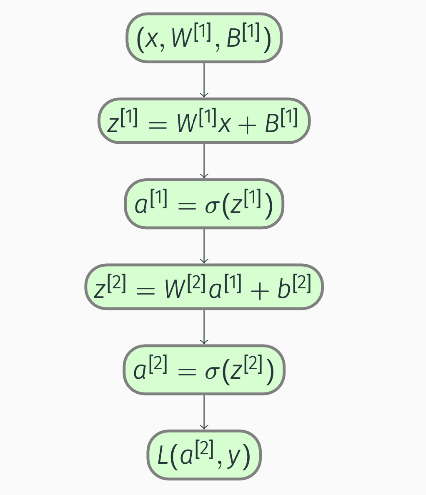Deep Networks
Backward propagation:
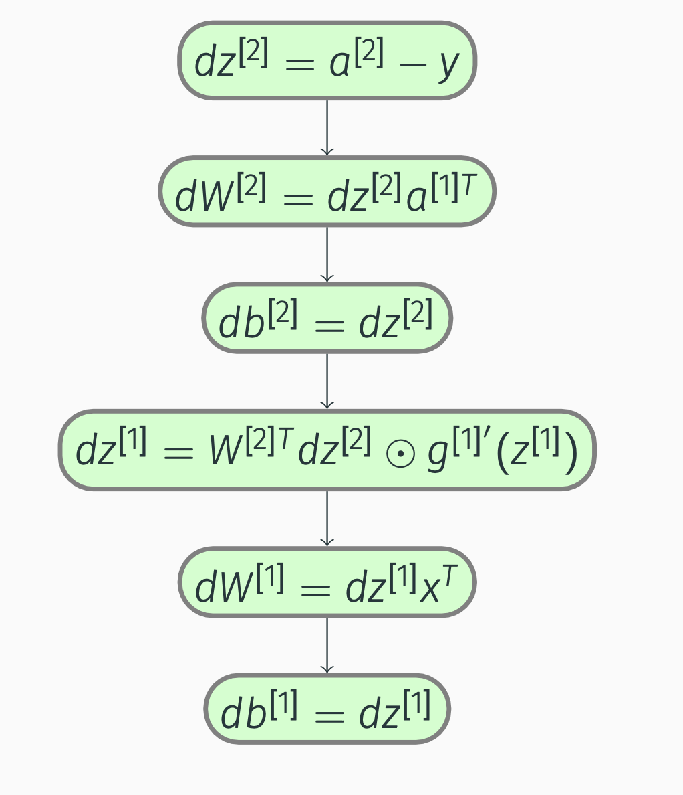Deep Networks
Vectorized versions: \[\begin{align*} &d\vec{Z}^{[2]} = A^{[2]} - Y,\\ &d\vec{W}^{[2]} = \frac{1}{m}d\vec{Z}^{[2]}\vec{A}^{[1]T},\\ &d\vec{b}^{[2]} = \frac{1}{m}np.sum(d\vec{Z}^{[2]}, axis=1,keepdims=True),\\ &d\vec{Z}^{[1]} = W^{[2]T}d\vec{Z}^{[2]} \odot g^{[1]'}(\vec{Z}^{[1]}),\\ &d\vec{W}^{[1]} = \frac{1}{m}d\vec{Z}^{[1]}\vec{X}^{T},\\ &d\vec{b}^{[1]} = \frac{1}{m}np.sum(d\vec{Z}^{[1]}, axis=1,keepdims=True) \end{align*}\]
Deep Networks: Random Initialization
Symmetry-breaking problem
If we initialize weights to zero, the hidden units will be symmetric. \[ W^{[1]} = np.random.randn((2,2))*0.01,\\ b^{[1]} = np.zero((2,1)) \]
Forward Propagation in a Deep Network
Deep Networks
\(a^{[l]}\) - activations in layer \(l\). 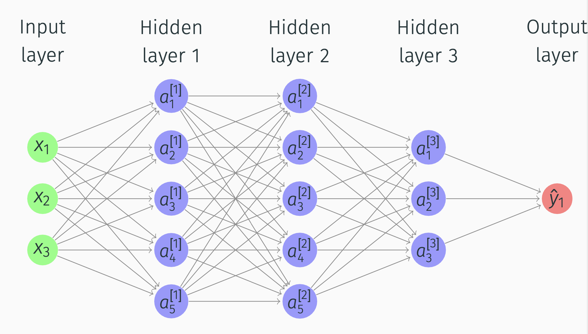
Deep Networks
General rule
\(z^{[l]} = W^{[l]}a^{[l-1]} + b^{[l]}\), \(a^{[l]} = g^{[l]}(z^{[l]})\).
Vectorized versions
\[\begin{align*} &Z^{[l]} = W^{[l]}A^{[l-1]} + b^{[l]}, \\ &A^{[l]} = g^{[l]}(Z^{[l]}) \end{align*}\]
Important
For loop is necessary for multiple layers.
Deep Networks
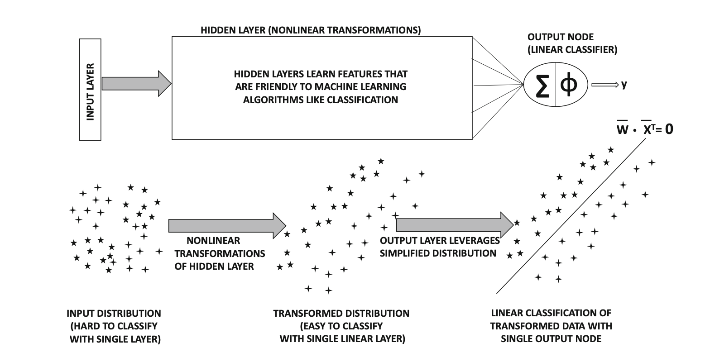Deep Networks
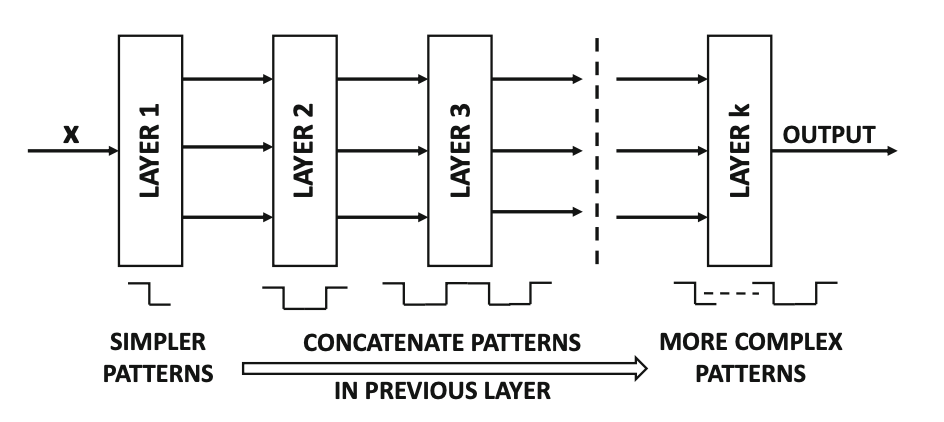Deep Networks
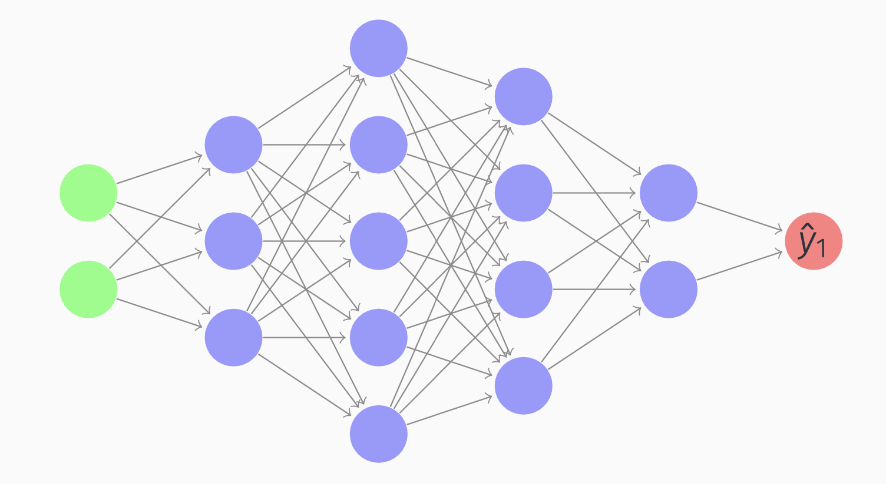Getting your Matrix Dimensions Right
- Dimensions of \(W^{[l]}\) are \((n^{[l]}, n^{[l-1]})\).
- Dimensions of \(b^{[l]}\) should be \((n^{[l]}, 1)\).
- Dimensions of dW and db should be identical to the ones for W and b.
- Dimension of \(Z^{[1]}\) is \((n^{[1]}, m)\).
Deep Networks
Intuition from circuit theory
Small L-layer network requires exponentially less hidden units than shallower networks.
Example
To compute XOR, we’ll need \(O(\log \, n)\) layers.
With a single hidden layer, we’ll need \(2^{n-1}\) hidden units.
Deep Networks
Forward propagation:
- Inputs: \(a^{[l-1]}\)
- Parameters: \(W^{[l]}\), \(b^{[l]}\).
- Outputs: \(a^{[l]}\)
- Cache: \(z^{[l]}\)
Backward propagation:
- Inputs: \(da^{[l]}\)
- Parameters: \(W^{[l]}\), \(b^{[l]}\).
- Outputs: \(da^{[l-1]}\)
- Cache: \(dz^{[l]}\), \(dW^{[l]}\), \(db^{[l]}\)
Deep Networks
Backward propagation steps:
\[\begin{align*} &dz^{[l]} = da^{[l]}\odot g^{[l]'}(z^{[l]})\\ &dW^{[l]} = dz^{[l]} \cdot (a^{[l-1]T})\\ &db^{[l]} = dz^{[l]} \\ &da^{[l-1]} = W^{[l]T} \cdot dz^{[l]} \end{align*}\]
Deep Networks
Vectorized versions:
\[\begin{align*} &dZ^{[l]} = dA^{[l]}\odot g^{[l]'}(Z^{[l]})\\ &dW^{[l]} = \frac{1}{m} dZ^{[l]} \cdot (A^{[l-1]T})\\ &db^{[l]} = \frac{1}{m} np.sum(dZ^{[l]}, axis=1, keepdims=True) \\ &dA^{[l-1]} = W^{[l]T} \cdot dZ^{[l]} \end{align*}\]
Final layer
\[\begin{align*} &da^{[l]} = -\frac{y}{a} + \frac{1-y}{1-a}. \end{align*}\]
Parameters vs Hyperparameters
Parameters
- \(W^{[i]}\)
- \(b^{[i]}\)
Hyperparameters
- learning rate
- n of iterations
- n of hidden layers (\(L\))
- n of hidden units (\(n^{[i]}\))
- choice of activation functions
Backpropagation in detail
Backpropagation
\[\begin{align} z_{j, i}^{[l]} &= \sum_k w_{j, k}^{[l]} a_{k, i}^{[l - 1]} + b_j^{[l]}, \label{eq:z_scalar} \\ a_{j, i}^{[l]} &= g_j^{[l]}(z_{1, i}^{[l]}, \dots, z_{j, i}^{[l]}, \dots, z_{n^{[l]}, i}^{[l]}). \label{eq:a_scalar} \end{align}\]
Backpropagation
| Entity | Description |
|---|---|
| \(l\) | The current layer \(l = 1, \dots, L\) |
| \(n^{[l]}\) | The number of nodes in the current layer |
| \(n^{[l - 1]}\) | The number of nodes in the previous layer |
| \(j\) | The \(j\)-th node of the current layer, \(j = 1, \dots, n^{[l]}\) |
| \(k\) | The \(k\)-th node of the previous layer,\(k = 1, \dots, n^{[l - 1]}\) |
| \(i\) | The current training example \(i = 1, \dots, m\) |
| \(z_{j, i}^{[l]}\) | A weighted sum of the activations of the previous layer |
Backpropagation
| Entity | Description |
|---|---|
| \(w_{j, k}^{[l]}\) | A weight that scales the \(k\)-th activation of the previous layer |
| \(b_j^{[l]}\) | A bias in the current layer |
| \(a_{j, i}^{[l]}\) | An activation in the current layer |
| \(a_{k, i}^{[l - 1]}\) | An activation in the previous layer |
| \(g_j^{[l]}\) | An activation function \(g_j^{[l]} \colon \mathbb{R}^{n^{[l]}} \to \mathbb{R}\) |
Backpropagation
We vectorize the nodes:
\[\begin{align*} \begin{bmatrix} z_{1, i}^{[l]} \\ \vdots \\ z_{j, i}^{[l]} \\ \vdots \\ z_{n^{[l]}, i}^{[l]} \end{bmatrix} &= \begin{bmatrix} w_{1, 1}^{[l]} & \dots & w_{1, k}^{[l]} & \dots & w_{1, n^{[l - 1]}}^{[l]} \\ \vdots & \ddots & \vdots & \ddots & \vdots \\ w_{j, 1}^{[l]} & \dots & w_{j, k}^{[l]} & \dots & w_{j, n^{[l - 1]}}^{[l]} \\ \vdots & \ddots & \vdots & \ddots & \vdots \\ w_{n^{[l]}, 1}^{[l]} & \dots & w_{n^{[l]}, k}^{[l]} & \dots & w_{n^{[l]}, n^{[l - 1]}}^{[l]} \end{bmatrix} \begin{bmatrix} a_{1, i}^{[l - 1]} \\ \vdots \\ a_{k, i}^{[l - 1]} \\ \vdots \\ a_{n^{[l - 1]}, i}^{[l - 1]} \end{bmatrix} + \begin{bmatrix} b_1^{[l]} \\ \vdots \\ b_j^{[l]} \\ \vdots \\ b_{n^{[l]}}^{[l]} \end{bmatrix}, \end{align*}\]
Backpropagation
\[\begin{align*} \begin{bmatrix} a_{1, i}^{[l]} \\ \vdots \\ a_{j, i}^{[l]} \\ \vdots \\ a_{n^{[l]}, i}^{[l]} \end{bmatrix} &= \begin{bmatrix} g_1^{[l]}(z_{1, i}^{[l]}, \dots, z_{j, i}^{[l]}, \dots, z_{n^{[l]}, i}^{[l]}) \\ \vdots \\ g_j^{[l]}(z_{1, i}^{[l]}, \dots, z_{j, i}^{[l]}, \dots, z_{n^{[l]}, i}^{[l]}) \\ \vdots \\ g_{n^{[l]}}^{[l]}(z_{1, i}^{[l]}, \dots, z_{j, i}^{[l]}, \dots, z_{n^{[l]}, i}^{[l]}) \\ \end{bmatrix}, \end{align*}\]
Backpropagation
which we can write as
\[\begin{align} \vec{z}_{:, i}^{[l]} &= \vec{W}^{[l]} \vec{a}_{:, i}^{[l - 1]} + \vec{b}^{[l]}, \label{eq:z} \\ \vec{a}_{:, i}^{[l]} &= \vec{g}^{[l]}(\vec{z}_{:, i}^{[l]}), \label{eq:a} \end{align}\]
where \[\begin{align*} &\vec{z}_{:, i}^{[l]} \in \mathbb{R}^{n^{[l]}}, \, &\vec{W}^{[l]} \in \mathbb{R}^{n^{[l]} \times n^{[l - 1]}}, \, &\vec{b}^{[l]} \in \mathbb{R}^{n^{[l]}}, \\ &\vec{a}_{:, i}^{[l]} \in \mathbb{R}^{n^{[l]}}, \; &\vec{a}_{:, i}^{[l - 1]} \in \mathbb{R}^{n^{[l - 1]}}, \; &\vec{g}^{[l]} \colon \mathbb{R}^{n^{[l]}} \to \mathbb{R}^{n^{[l]}}. \end{align*}\]
Backpropagation
Next, we vectorize the training examples:
\[\begin{align} \vec{Z}^{[l]} &= \begin{bmatrix} \vec{z}_{:, 1}^{[l]} & \dots & \vec{z}_{:, i}^{[l]} & \dots & \vec{z}_{:, m}^{[l]} \end{bmatrix} \label{eq:Z} \\ &= \vec{W}^{[l]} \begin{bmatrix} \vec{a}_{:, 1}^{[l - 1]} & \dots & \vec{a}_{:, i}^{[l - 1]} & \dots & \vec{a}_{:, m}^{[l - 1]} \end{bmatrix} + \begin{bmatrix} \vec{b}^{[l]} & \dots & \vec{b}^{[l]} & \dots & \vec{b}^{[l]} \end{bmatrix} \notag \\ &= \vec{W}^{[l]} \vec{A}^{[l - 1]} + \text{broadcast}(\vec{b}^{[l]}), \notag \\ \vec{A}^{[l]} &= \begin{bmatrix} \vec{a}_{:, 1}^{[l]} & \dots & \vec{a}_{:, i}^{[l]} & \dots & \vec{a}_{:, m}^{[l]} \end{bmatrix}, \label{eq:A} \end{align}\]
where \[\begin{align*} &\vec{Z}^{[l]} \in \mathbb{R}^{n^{[l]} \times m}, \\ &\vec{A}^{[l]} \in \mathbb{R}^{n^{[l]} \times m}, \\ &\vec{A}^{[l - 1]} \in \mathbb{R}^{n^{[l - 1]} \times m}. \end{align*}\]
Backpropagation
Numpy broadcasting
Smaller array is “broadcast” across the larger array so that they have compatible shapes.
Broadcasting provides a means of vectorizing array operations so that looping occurs in C instead of Python.

Backpropagation
We would also like to establish two additional notations:
\[\begin{align} \vec{A}^{[0]} &= \vec{X}, \label{eq:A_zero} \\ \vec{A}^{[L]} &= \vec{\hat{Y}}, \label{eq:A_L} \end{align}\]
where \(\vec{X} \in \mathbb{R}^{n^{[0]} \times m}\) denotes the inputs and \(\vec{\hat{Y}} \in \mathbb{R}^{n^{[L]} \times m}\) denotes the predictions/outputs.
Finally, we are ready to define the cost function:
\[\begin{equation} J = f(\vec{\hat{Y}}, \vec{Y}) = f(\vec{A}^{[L]}, \vec{Y}), \label{eq:J} \end{equation}\]
where \(\vec{Y} \in \mathbb{R}^{n^{[L]} \times m}\) denotes the targets and \(f \colon \mathbb{R}^{2 n^{[L]}} \to \mathbb{R}\) can be tailored to our needs.
Backpropagation
\[ \def\pdv#1#2{\frac{\partial #1}{\partial #2}} \def\dpdv#1#2{\frac{\partial #1}{\partial #2}} \newcommand{\R}{\mathbb{R}} \newcommand{\peq}{\phantom{=}} \]
Chain rule
\[\begin{align} u_i &= g_i(x_1, \dots, x_j, \dots, x_n), \label{eq:example_u_scalar} \\ y_k &= f_k(u_1, \dots, u_i, \dots, u_m). \label{eq:example_y_scalar} \end{align}\]
\[\begin{equation} \pdv{y_k}{x_j} = \sum_i \pdv{y_k}{u_i} \pdv{u_i}{x_j}. \label{eq:chain_rule} \end{equation}\]
Backpropagation
Let’s write out first derivatives of \(J\) with respect to parameters \(w\) and \(b\):
\[\begin{align} \pdv{J}{w_{j, k}^{[l]}} &= \sum_i \pdv{J}{z_{j, i}^{[l]}} \pdv{z_{j, i}^{[l]}}{w_{j, k}^{[l]}} = \sum_i \pdv{J}{z_{j, i}^{[l]}} a_{k, i}^{[l - 1]}, \label{eq:dw_scalar} \\ \pdv{J}{b_j^{[l]}} &= \sum_i \pdv{J}{z_{j, i}^{[l]}} \pdv{z_{j, i}^{[l]}}{b_j^{[l]}} = \sum_i \pdv{J}{z_{j, i}^{[l]}}. \label{eq:db_scalar} \end{align}\]
Backpropagation
Vectorization results in
\[\begin{align*} & \begin{bmatrix} \dpdv{J}{w_{1, 1}^{[l]}} & \dots & \dpdv{J}{w_{1, k}^{[l]}} & \dots & \dpdv{J}{w_{1, n^{[l - 1]}}^{[l]}} \\ \vdots & \ddots & \vdots & \ddots & \vdots \\ \dpdv{J}{w_{j, 1}^{[l]}} & \dots & \dpdv{J}{w_{j, k}^{[l]}} & \dots & \dpdv{J}{w_{j, n^{[l - 1]}}^{[l]}} \\ \vdots & \ddots & \vdots & \ddots & \vdots \\ \dpdv{J}{w_{n^{[l]}, 1}^{[l]}} & \dots & \dpdv{J}{w_{n^{[l]}, k}^{[l]}} & \dots & \dpdv{J}{w_{n^{[l]}, n^{[l - 1]}}^{[l]}} \end{bmatrix} = \begin{bmatrix} \dpdv{J}{z_{1, 1}^{[l]}} & \dots & \dpdv{J}{z_{1, i}^{[l]}} & \dots & \dpdv{J}{z_{1, m}^{[l]}} \\ \vdots & \ddots & \vdots & \ddots & \vdots \\ \dpdv{J}{z_{j, 1}^{[l]}} & \dots & \dpdv{J}{z_{j, i}^{[l]}} & \dots & \dpdv{J}{z_{j, m}^{[l]}} \\ \vdots & \ddots & \vdots & \ddots & \vdots \\ \dpdv{J}{z_{n^{[l]}, 1}^{[l]}} & \dots & \dpdv{J}{z_{n^{[l]}, i}^{[l]}} & \dots & \dpdv{J}{z_{n^{[l]}, m}^{[l]}} \end{bmatrix} \notag \\ &\peq{} \cdot \begin{bmatrix} a_{1, 1}^{[l - 1]} & \dots & a_{k, 1}^{[l - 1]} & \dots & a_{n^{[l - 1]}, 1}^{[l - 1]} \\ \vdots & \ddots & \vdots & \ddots & \vdots \\ a_{1, i}^{[l - 1]} & \dots & a_{k, i}^{[l - 1]} & \dots & a_{n^{[l - 1]}, i}^{[l - 1]} \\ \vdots & \ddots & \vdots & \ddots & \vdots \\ a_{1, m}^{[l - 1]} & \dots & a_{k, m}^{[l - 1]} & \dots & a_{n^{[l - 1]}, m}^{[l - 1]} \end{bmatrix}, \notag \end{align*}\]
Backpropagation
\[\begin{align*} \begin{bmatrix} \dpdv{J}{b_1^{[l]}} \\ \vdots \\ \dpdv{J}{b_j^{[l]}} \\ \vdots \\ \dpdv{J}{b_{n^{[l]}}^{[l]}} \end{bmatrix} = \begin{bmatrix} \dpdv{J}{z_{1, 1}^{[l]}} \\ \vdots \\ \dpdv{J}{z_{j, 1}^{[l]}} \\ \vdots \\ \dpdv{J}{z_{n^{[l]}, 1}^{[l]}} \end{bmatrix} + \dots + \begin{bmatrix} \dpdv{J}{z_{1, i}^{[l]}} \\ \vdots \\ \dpdv{J}{z_{j, i}^{[l]}} \\ \vdots \\ \dpdv{J}{z_{n^{[l]}, i}^{[l]}} \end{bmatrix} + \dots + \begin{bmatrix} \dpdv{J}{z_{1, m}^{[l]}} \\ \vdots \\ \dpdv{J}{z_{j, m}^{[l]}} \\ \vdots \\ \dpdv{J}{z_{n^{[l]}, m}^{[l]}} \end{bmatrix}, \end{align*}\]
Backpropagation
\[\begin{align} \pdv{J}{\vec{W}^{[l]}} &= \sum_i \pdv{J}{\vec{z}_{:, i}^{[l]}} \vec{a}_{:, i}^{[l - 1]T} = \pdv{J}{\vec{Z}^{[l]}} \vec{A}^{[l - 1]^T}, \label{eq:dW} \\ \pdv{J}{\vec{b}^{[l]}} &= \sum_i \pdv{J}{\vec{z}_{:, i}^{[l]}} = \underbrace{\sum_{\text{axis} = 1} \pdv{J}{\vec{Z}^{[l]}}}_\text{column vector}, \label{eq:db} \end{align}\] where \(\pdv{J}{\vec{z}_{:, i}^{[l]}} \in \R^{n^{[l]}}\), \(\pdv{J}{\vec{Z}^{[l]}} \in \R^{n^{[l]} \times m}\), \(\pdv{J}{\vec{W}^{[l]}} \in \R^{n^{[l]} \times n^{[l - 1]}}\), and \(\pdv{J}{\vec{b}^{[l]}} \in \R^{n^{[l]}}\).
Backpropagation
Looking back at \(\eqref{eq:dw_scalar}\) and \(\eqref{eq:db_scalar}\), we see that the only unknown entity is \(\pdv{J}{z_{j, i}^{[l]}}\). By applying the chain rule once again, we get
\[\begin{equation} \pdv{J}{z_{j, i}^{[l]}} = \sum_p \pdv{J}{a_{p, i}^{[l]}} \pdv{a_{p, i}^{[l]}}{z_{j, i}^{[l]}}, \label{eq:dz_scalar} \end{equation}\]
where \(p = 1, \dots, n^{[l]}\).
Backpropagation
Next, we present the vectorized version of \(\eqref{eq:dz_scalar}\):
\[\begin{equation*} \begin{bmatrix} \dpdv{J}{z_{1, i}^{[l]}} \\ \vdots \\ \dpdv{J}{z_{j, i}^{[l]}} \\ \vdots \\ \dpdv{J}{z_{n^{[l]}, i}^{[l]}} \end{bmatrix} = \begin{bmatrix} \dpdv{a_{1, i}^{[l]}}{z_{1, i}^{[l]}} & \dots & \dpdv{a_{j, i}^{[l]}}{z_{1, i}^{[l]}} & \dots & \dpdv{a_{n^{[l]}, i}^{[l]}}{z_{1, i}^{[l]}} \\ \vdots & \ddots & \vdots & \ddots & \vdots \\ \dpdv{a_{1, i}^{[l]}}{z_{j, i}^{[l]}} & \dots & \dpdv{a_{j, i}^{[l]}}{z_{j, i}^{[l]}} & \dots & \dpdv{a_{n^{[l]}, i}^{[l]}}{z_{j, i}^{[l]}} \\ \vdots & \ddots & \vdots & \ddots & \vdots \\ \dpdv{a_{1, i}^{[l]}}{z_{n^{[l]}, i}^{[l]}} & \dots & \dpdv{a_{j, i}^{[l]}}{z_{n^{[l]}, i}^{[l]}} & \dots & \dpdv{a_{n^{[l]}, i}^{[l]}}{z_{n^{[l]}, i}^{[l]}} \end{bmatrix} \begin{bmatrix} \dpdv{J}{a_{1, i}^{[l]}} \\ \vdots \\ \dpdv{J}{a_{j, i}^{[l]}} \\ \vdots \\ \dpdv{J}{a_{n^{[l]}, i}^{[l]}} \end{bmatrix}, \end{equation*}\]
Backpropagation
Which can be converted into
\[\begin{equation} \pdv{J}{\vec{z}_{:, i}^{[l]}} = \pdv{\vec{a}_{:, i}^{[l]}}{\vec{z}_{:, i}^{[l]}} \pdv{J}{\vec{a}_{:, i}^{[l]}}, \label{eq:dz} \end{equation}\]
where \(\pdv{J}{\vec{a}_{:, i}^{[l]}} \in \R^{n^{[l]}}\) and \(\pdv{\vec{a}_{:, i}^{[l]}}{\vec{z}_{:, i}^{[l]}} \in \R^{n^{[l]} \times n^{[l]}}\).
Backpropagation
We have already encountered
\[\begin{equation} \pdv{J}{\vec{Z}^{[l]}} = \begin{bmatrix} \dpdv{J}{\vec{z}_{:, 1}^{[l]}} & \dots & \dpdv{J}{\vec{z}_{:, i}^{[l]}} & \dots & \dpdv{J}{\vec{z}_{:, m}^{[l]}} \end{bmatrix}, \label{eq:dZ} \end{equation}\]
and for the sake of completeness, we also clarify that
\[\begin{equation} \pdv{J}{\vec{A}^{[l]}} = \begin{bmatrix} \dpdv{J}{\vec{a}_{:, 1}^{[l]}} & \dots & \dpdv{J}{\vec{a}_{:, i}^{[l]}} & \dots & \dpdv{J}{\vec{a}_{:, m}^{[l]}} \end{bmatrix}, \label{eq:dA} \end{equation}\]
where \(\pdv{J}{\vec{A}^{[l]}} \in \R^{n^{[l]} \times m}\).
On purpose, we have omitted the details of \(g_j^{[l]}(z_{1, i}^{[l]}, \dots, z_{j, i}^{[l]}, \dots, z_{n^{[l]}, i}^{[l]})\); consequently, we cannot derive an analytic expression for \(\pdv{a_{j, i}^{[l]}}{z_{j, i}^{[l]}}\), which we depend on in \(\eqref{eq:dz_scalar}\).
Backpropagation
Furthermore, according to \(\eqref{eq:dz_scalar}\), we see that \(\pdv{J}{z_{j, i}^{[l]}}\) also depends on \(\pdv{J}{a_{j, i}^{[l]}}\).
\(\pdv{J}{a_{j, i}^{[l]}}\) has already been computed when we reach the \(l\)-th layer during backward propagation.
How? Each layer paves the way for the previous layer by also computing \(\pdv{J}{a_{k, i}^{[l - 1]}}\), which we shall do now:
\[\begin{equation} \pdv{J}{a_{k, i}^{[l - 1]}} = \sum_j \pdv{J}{z_{j, i}^{[l]}} \pdv{z_{j, i}^{[l]}}{a_{k, i}^{[l - 1]}} = \sum_j \pdv{J}{z_{j, i}^{[l]}} w_{j, k}^{[l]}. \label{eq:da_prev_scalar} \end{equation}\]
Backpropagation
\[\begin{equation*} \begin{split} & \begin{bmatrix} \dpdv{J}{a_{1, 1}^{[l - 1]}} & \dots & \dpdv{J}{a_{1, i}^{[l - 1]}} & \dots & \dpdv{J}{a_{1, m}^{[l - 1]}} \\ \vdots & \ddots & \vdots & \ddots & \vdots \\ \dpdv{J}{a_{k, 1}^{[l - 1]}} & \dots & \dpdv{J}{a_{k, i}^{[l - 1]}} & \dots & \dpdv{J}{a_{k, m}^{[l - 1]}} \\ \vdots & \ddots & \vdots & \ddots & \vdots \\ \dpdv{J}{a_{n^{[l - 1]}, 1}^{[l - 1]}} & \dots & \dpdv{J}{a_{n^{[l - 1]}, i}^{[l - 1]}} & \dots & \dpdv{J}{a_{n^{[l - 1]}, m}^{[l - 1]}} \end{bmatrix} \\ &= \begin{bmatrix} w_{1, 1}^{[l]} & \dots & w_{j, 1}^{[l]} & \dots & w_{n^{[l]}, 1}^{[l]} \\ \vdots & \ddots & \vdots & \ddots & \vdots \\ w_{1, k}^{[l]} & \dots & w_{j, k}^{[l]} & \dots & w_{n^{[l]}, k}^{[l]} \\ \vdots & \ddots & \vdots & \ddots & \vdots \\ w_{1, n^{[l - 1]}}^{[l]} & \dots & w_{j, n^{[l - 1]}}^{[l]} & \dots & w_{n^{[l]}, n^{[l - 1]}}^{[l]} \end{bmatrix} \cdot \begin{bmatrix} \dpdv{J}{z_{1, 1}^{[l]}} & \dots & \dpdv{J}{z_{1, i}^{[l]}} & \dots & \dpdv{J}{z_{1, m}^{[l]}} \\ \vdots & \ddots & \vdots & \ddots & \vdots \\ \dpdv{J}{z_{j, 1}^{[l]}} & \dots & \dpdv{J}{z_{j, i}^{[l]}} & \dots & \dpdv{J}{z_{j, m}^{[l]}} \\ \vdots & \ddots & \vdots & \ddots & \vdots \\ \dpdv{J}{z_{n^{[l]}, 1}^{[l]}} & \dots & \dpdv{J}{z_{n^{[l]}, i}^{[l]}} & \dots & \dpdv{J}{z_{n^{[l]}, m}^{[l]}} \end{bmatrix}, \end{split} \end{equation*}\]
Backpropagation
which we can write as \[\begin{align} &\pdv{J}{\vec{A}^{[l - 1]}} =\vec{W}^{[l]T} \pdv{J}{\vec{Z}^{[l]}}, \label{eq:dA_prev} \end{align}\]
where \(\pdv{J}{\vec{A}^{[l - 1]}} \in \R^{n^{[l - 1]} \times m}\).
Backpropagation
Initial values
- Forward: \(\vec{A}^{[0]} = \vec{X}\)
- Backward: \(\pdv{J}{\vec{A}^{[L]}} = \pdv{J}{\vec{\hat{Y}}}\)
Computations
- Forward: \(\vec{A}^{[0]} = \vec{X}, \vec{A}^{[L]} = \vec{\hat{Y}}, J = f(\vec{\hat{Y}}, \vec{Y}) = f(\vec{A}^{[L]}, \vec{Y})\)
- Backward: \(\dfrac{\partial J}{\partial \vec{A}^{[L]}} = \dfrac{\partial J}{\partial \vec{\hat{Y}}}, \dfrac{\partial J}{\partial \vec{W}^{[l]}}, \dfrac{\partial J}{\partial \vec{b}^{[l]}}\)
Backpropagation
Backpropagation seed
We have yet to derive an analytic expression for the backpropagation seed \(\dpdv{J}{\vec{A}^{[L]}} = \dpdv{J}{\vec{\hat{Y}}}\).
Let’s derive an analytic expression for \(\dpdv{a_{j, i}^{[l]}}{z_{j, i}^{[l]}}\) or, by extension, \(\dpdv{J}{z_{j, i}^{[l]}}\).
Backpropagation: ReLU
The rectified linear unit, or ReLU for short, is given by
\[\begin{equation*} \begin{split} a_{j, i}^{[l]} &= g_j^{[l]}(z_{1, i}^{[l]}, \dots, z_{j, i}^{[l]}, \dots, z_{n^{[l]}, i}^{[l]}) \\ &= \max(0, z_{j, i}^{[l]}) = \\ &= \begin{cases} z_{j, i}^{[l]} &\text{if } z_{j, i}^{[l]} > 0, \\ 0 &\text{otherwise.} \end{cases} \end{split} \end{equation*}\]
In other words,
\[\begin{equation} \vec{A}^{[l]} = \max(0, \vec{Z}^{[l]}). \end{equation}\]
Backpropagation: ReLU
Compute the partial derivatives of the activations in the current layer:
\[\begin{align*} \pdv{a_{j, i}^{[l]}}{z_{j, i}^{[l]}} &:= \begin{cases} 1 &\text{if } z_{j, i}^{[l]} > 0, \\ 0 &\text{otherwise,} \end{cases} \\ &= I(z_{j, i}^{[l]} > 0), \notag \\ \pdv{a_{p, i}^{[l]}}{z_{j, i}^{[l]}} &= 0, \quad \forall p \ne j. \end{align*}\]
Backpropagation: ReLU
It follows that
\[\begin{equation*} \begin{split} \pdv{J}{z_{j, i}^{[l]}} &= \sum_p \pdv{J}{a_{p, i}^{[l]}} \pdv{a_{p, i}^{[l]}}{z_{j, i}^{[l]}} = \pdv{J}{a_{j, i}^{[l]}} \pdv{a_{j, i}^{[l]}}{z_{j, i}^{[l]}} + \sum_{p \ne j} \pdv{J}{a_{p, i}^{[l]}} \pdv{a_{p, i}^{[l]}}{z_{j, i}^{[l]}} = \\ &= \pdv{J}{a_{j, i}^{[l]}} I(z_{j, i}^{[l]} > 0), \end{split} \end{equation*}\]
which we can vectorize as
\[\begin{equation} \pdv{J}{\vec{Z}^{[l]}} = \pdv{J}{\vec{A}^{[l]}} \odot I(\vec{Z}^{[l]} > 0), \end{equation}\]
where \(\odot\) denotes element-wise multiplication (Hadamard product).
Backpropagation: Sigmoid
The sigmoid activation function is given by
\[\begin{equation*} \begin{split} a_{j, i}^{[l]} &= g_j^{[l]}(z_{1, i}^{[l]}, \dots, z_{j, i}^{[l]}, \dots, z_{n^{[l]}, i}^{[l]}) \\ &= \sigma(z_{j, i}^{[l]}) = \frac{1}{1 + \exp(-z_{j, i}^{[l]})}. \end{split} \end{equation*}\]
Vectorization yields
\[\begin{equation} \vec{A}^{[l]} = \frac{1}{1 + \exp(-\vec{Z}^{[l]})}. \end{equation}\]
Backpropagation: Sigmoid
To practice backward propagation, first, we construct a computation graph:
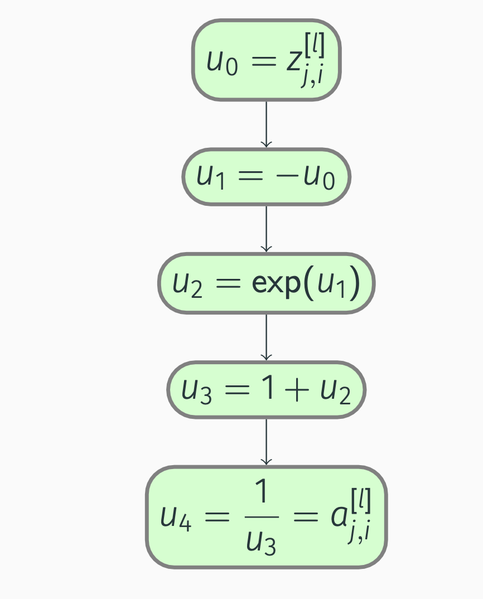
Backpropagation: Sigmoid
Compute, starting from outside:
\[\begin{align*} &\pdv{a_{j, i}^{[l]}}{u_4} = 1, \; \pdv{a_{j, i}^{[l]}}{u_3} = \pdv{a_{j, i}^{[l]}}{u_4} \pdv{u_4}{u_3} = -\frac{1}{u_3^2} = -\frac{1}{(1 + \exp(-z_{j, i}^{[l]}))^2}, \\ &\pdv{a_{j, i}^{[l]}}{u_2} = \pdv{a_{j, i}^{[l]}}{u_3} \pdv{u_3}{u_2} = -\frac{1}{u_3^2} = -\frac{1}{(1 + \exp(-z_{j, i}^{[l]}))^2}, \\ &\pdv{a_{j, i}^{[l]}}{u_1} = \pdv{a_{j, i}^{[l]}}{u_2} \pdv{u_2}{u_1} = -\frac{1}{u_3^2} \exp(u_1) = -\frac{\exp(-z_{j, i}^{[l]})}{(1 + \exp(-z_{j, i}^{[l]}))^2}, \\ &\pdv{a_{j, i}^{[l]}}{u_0} = \pdv{a_{j, i}^{[l]}}{u_1} \pdv{u_1}{u_0} = \frac{1}{u_3^2} \exp(u_1) = \frac{\exp(-z_{j, i}^{[l]})}{(1 + \exp(-z_{j, i}^{[l]}))^2}. \end{align*}\]
Backpropagation: Sigmoid
Let us simplify:
\[\begin{equation*} \begin{split} \pdv{a_{j, i}^{[l]}}{z_{j, i}^{[l]}} &= \frac{\exp(-z_{j, i}^{[l]})}{(1 + \exp(-z_{j, i}^{[l]}))^2} \\ &= \frac{1 + \exp(-z_{j, i}^{[l]}) - 1}{(1 + \exp(-z_{j, i}^{[l]}))^2} \notag \\ &= \frac{1}{1 + \exp(-z_{j, i}^{[l]})} - \frac{1}{(1 + \exp(-z_{j, i}^{[l]}))^2} \notag \\ &= a_{j, i}^{[l]} (1 - a_{j, i}^{[l]}). \end{split} \end{equation*}\]
Backpropagation: Sigmoid
We also note that
\[\begin{equation*} \pdv{a_{p, i}^{[l]}}{z_{j, i}^{[l]}} = 0, \quad \forall p \ne j. \end{equation*}\]
Consequently,
\[\begin{equation*} \begin{split} \pdv{J}{z_{j, i}^{[l]}} &= \sum_p \pdv{J}{a_{p, i}^{[l]}} \pdv{a_{p, i}^{[l]}}{z_{j, i}^{[l]}} \\ &= \pdv{J}{a_{j, i}^{[l]}} \pdv{a_{j, i}^{[l]}}{z_{j, i}^{[l]}} + \sum_{p \ne j} \pdv{J}{a_{p, i}^{[l]}} \pdv{a_{p, i}^{[l]}}{z_{j, i}^{[l]}} \\ &= \pdv{J}{a_{j, i}^{[l]}} a_{j, i}^{[l]} (1 - a_{j, i}^{[l]}). \end{split} \end{equation*}\]
Backpropagation: Sigmoid
Lastly, no summations mean trivial vectorization:
\[\begin{equation} \pdv{J}{\vec{Z}^{[l]}} = \pdv{J}{\vec{A}^{[l]}} \odot \vec{A}^{[l]} \odot (1 - \vec{A}^{[l]}). \end{equation}\]
Backpropagation: tanh
The hyperbolic tangent function, i.e., the tanh activation function, is given by
\[\begin{equation*} \begin{split} a_{j, i}^{[l]} &= g_j^{[l]}(z_{1, i}^{[l]}, \dots, z_{j, i}^{[l]}, \dots, z_{n^{[l]}, i}^{[l]}) \\ &= \tanh(z_{j, i}^{[l]}) \\ &= \frac{\exp(z_{j, i}^{[l]}) - \exp(-z_{j, i}^{[l]})}{\exp(z_{j, i}^{[l]}) + \exp(-z_{j, i}^{[l]})}. \end{split} \end{equation*}\]
By utilizing element-wise multiplication, we get
\[\begin{equation} \vec{A}^{[l]} = \frac{1}{\exp(\vec{Z}^{[l]}) + \exp(-\vec{Z}^{[l]})} \odot (\exp(\vec{Z}^{[l]}) - \exp(-\vec{Z}^{[l]})). \end{equation}\]
Backpropagation: tanh
Computation graph:
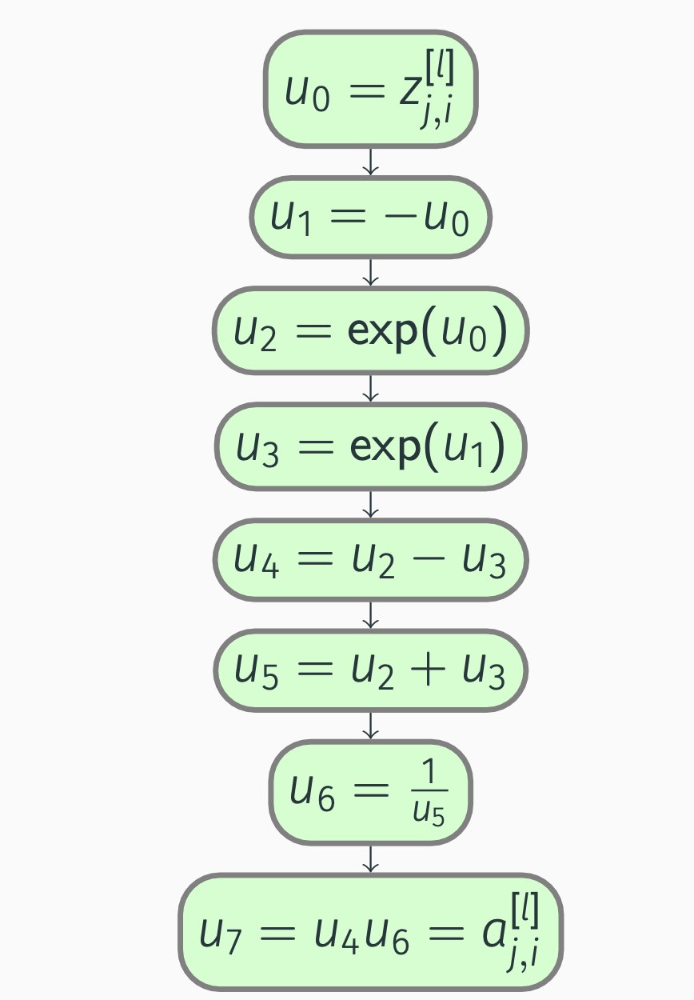Backpropagation: tanh
We compute the partial derivatives:
\[\begin{align*} \pdv{a_{j, i}^{[l]}}{u_7} &= 1, \\ \pdv{a_{j, i}^{[l]}}{u_6} &= \pdv{a_{j, i}^{[l]}}{u_7} \pdv{u_7}{u_6} = u_4 = \exp(z_{j, i}^{[l]}) - \exp(-z_{j, i}^{[l]}), \\ \pdv{a_{j, i}^{[l]}}{u_5} &= \pdv{a_{j, i}^{[l]}}{u_6} \pdv{u_6}{u_5} = -u_4 \frac{1}{u_5^2} = -\frac{\exp(z_{j, i}^{[l]}) - \exp(-z_{j, i}^{[l]})}{(\exp(z_{j, i}^{[l]}) + \exp(-z_{j, i}^{[l]}))^2}, \\ \pdv{a_{j, i}^{[l]}}{u_4} &= \pdv{a_{j, i}^{[l]}}{u_7} \pdv{u_7}{u_4} = u_6 = \frac{1}{\exp(z_{j, i}^{[l]}) + \exp(-z_{j, i}^{[l]})}, \end{align*}\]
Backpropagation: tanh
\[\begin{align*} \pdv{a_{j, i}^{[l]}}{u_3} &= \pdv{a_{j, i}^{[l]}}{u_4} \pdv{u_4}{u_3} + \pdv{a_{j, i}^{[l]}}{u_5} \pdv{u_5}{u_3} \\ &= -u_6 - u_4 \frac{1}{u_5^2} \notag \\ &= -\frac{1}{\exp(z_{j, i}^{[l]}) + \exp(-z_{j, i}^{[l]})} - \frac{\exp(z_{j, i}^{[l]}) - \exp(-z_{j, i}^{[l]})}{(\exp(z_{j, i}^{[l]}) + \exp(-z_{j, i}^{[l]}))^2} \notag \\ &= -\frac{2 \exp(z_{j, i}^{[l]})}{(\exp(z_{j, i}^{[l]}) + \exp(-z_{j, i}^{[l]}))^2}, \notag \\ \pdv{a_{j, i}^{[l]}}{u_2} &= \pdv{a_{j, i}^{[l]}}{u_4} \pdv{u_4}{u_2} + \pdv{a_{j, i}^{[l]}}{u_5} \pdv{u_5}{u_2} = u_6 - u_4 \frac{1}{u_5^2} =\notag \end{align*}\]
Backpropagation: tanh
\[\begin{align*} &= \frac{1}{\exp(z_{j, i}^{[l]}) + \exp(-z_{j, i}^{[l]})} - \frac{\exp(z_{j, i}^{[l]}) - \exp(-z_{j, i}^{[l]})}{(\exp(z_{j, i}^{[l]}) + \exp(-z_{j, i}^{[l]}))^2} \notag \\ &= \frac{2 \exp(-z_{j, i}^{[l]})}{(\exp(z_{j, i}^{[l]}) + \exp(-z_{j, i}^{[l]}))^2}, \notag \\ \pdv{a_{j, i}^{[l]}}{u_1} &= \pdv{a_{j, i}^{[l]}}{u_3} \pdv{u_3}{u_1} \\ &= \Bigl(-u_6 - u_4 \frac{1}{u_5^2}\Bigr) \exp(u_1) \notag \\ &= -\frac{2 \exp(z_{j, i}^{[l]}) \exp(-z_{j, i}^{[l]})}{(\exp(z_{j, i}^{[l]}) + \exp(-z_{j, i}^{[l]}))^2}, \notag \end{align*}\]
Backpropagation: tanh
\[\begin{align*} \pdv{a_{j, i}^{[l]}}{u_0} &= \pdv{a_{j, i}^{[l]}}{u_1} \pdv{u_1}{u_0} + \pdv{a_{j, i}^{[l]}}{u_2} \pdv{u_2}{u_0} \\ &= -\Bigl(-u_6 - u_4 \frac{1}{u_5^2}\Bigr) \exp(u_1) + \Bigl(u_6 - u_4 \frac{1}{u_5^2}\Bigr) \exp(u_0) \notag \\ &= \frac{2 \exp(z_{j, i}^{[l]}) \exp(-z_{j, i}^{[l]})}{(\exp(z_{j, i}^{[l]}) + \exp(-z_{j, i}^{[l]}))^2} + \frac{2 \exp(z_{j, i}^{[l]}) \exp(-z_{j, i}^{[l]})}{(\exp(z_{j, i}^{[l]}) + \exp(-z_{j, i}^{[l]}))^2} \notag \\ &= \frac{4 \exp(z_{j, i}^{[l]}) \exp(-z_{j, i}^{[l]})}{(\exp(z_{j, i}^{[l]}) + \exp(-z_{j, i}^{[l]}))^2}. \notag \end{align*}\]
Backpropagation: tanh
It follows that
\[\begin{equation*} \begin{split} \pdv{a_{j, i}^{[l]}}{z_{j, i}^{[l]}} &= \frac{4 \exp(z_{j, i}^{[l]}) \exp(-z_{j, i}^{[l]})}{(\exp(z_{j, i}^{[l]}) + \exp(-z_{j, i}^{[l]}))^2} \\ &= \frac{\exp(z_{j, i}^{[l]})^2 + 2 \exp(z_{j, i}^{[l]}) \exp(-z_{j, i}^{[l]}) + \exp(-z_{j, i}^{[l]})^2}{(\exp(z_{j, i}^{[l]}) + \exp(-z_{j, i}^{[l]}))^2} \\ &\peq\negmedspace{} - \frac{\exp(z_{j, i}^{[l]})^2 - 2 \exp(z_{j, i}^{[l]}) \exp(-z_{j, i}^{[l]}) + \exp(-z_{j, i}^{[l]})^2}{(\exp(z_{j, i}^{[l]}) + \exp(-z_{j, i}^{[l]}))^2} \\ &= 1 - \frac{(\exp(z_{j, i}^{[l]}) - \exp(-z_{j, i}^{[l]}))^2}{(\exp(z_{j, i}^{[l]}) + \exp(-z_{j, i}^{[l]}))^2} = 1 - a_{j, i}^{[l]} a_{j, i}^{[l]}. \end{split} \end{equation*}\]
Backpropagation: tanh
Similarly to the sigmoid activation function: \(\pdv{a_{p, i}^{[l]}}{z_{j, i}^{[l]}} = 0, \quad \forall p \ne j.\)
Thus,
\[\begin{equation*} \begin{split} \pdv{J}{z_{j, i}^{[l]}} &= \sum_p \pdv{J}{a_{p, i}^{[l]}} \pdv{a_{p, i}^{[l]}}{z_{j, i}^{[l]}} = \pdv{J}{a_{j, i}^{[l]}} \pdv{a_{j, i}^{[l]}}{z_{j, i}^{[l]}} + \sum_{p \ne j} \pdv{J}{a_{p, i}^{[l]}} \pdv{a_{p, i}^{[l]}}{z_{j, i}^{[l]}} = \\ &= \pdv{J}{a_{j, i}^{[l]}} \left(1 - a_{j, i}^{[l]} a_{j, i}^{[l]}\right), \end{split} \end{equation*}\]
which implies that
\[\begin{equation} \pdv{J}{\vec{Z}^{[l]}} = \pdv{J}{\vec{A}^{[l]}} \odot (1 - \vec{A}^{[l]} \odot \vec{A}^{[l]}). \end{equation}\]
Backpropagation: softmax
The softmax activation function is given by
\[\begin{equation*} \begin{split} a_{j, i}^{[l]} &= g_j^{[l]}(z_{1, i}^{[l]}, \dots, z_{j, i}^{[l]}, \dots, z_{n^{[l]}, i}^{[l]}) \\ &= \frac{\exp(z_{j, i}^{[l]})}{\sum_p \exp(z_{p, i}^{[l]})}. \end{split} \end{equation*}\]
Vectorization results in
\[\begin{equation} \vec{A}^{[l]} = \frac{1}{\text{broadcast}(\underbrace{\sum_{\text{axis} = 0} \exp(\vec{Z}^{[l]})}_\text{row vector})} \odot \exp(\vec{Z}^{[l]}). \end{equation}\]
Backpropagation: softmax
To begin with, we construct a computation graph for the \(j\)-th activation of the current layer:
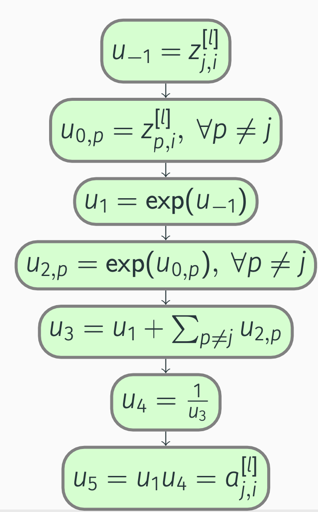Backpropagation: softmax
By applying the chain rule, we get
\[\begin{align*} \pdv{a_{j, i}^{[l]}}{u_5} &= 1, \\ \pdv{a_{j, i}^{[l]}}{u_4} &= \pdv{a_{j, i}^{[l]}}{u_5} \pdv{u_5}{u_4} = u_1 = \exp(z_{j, i}^{[l]}), \\ \pdv{a_{j, i}^{[l]}}{u_3} &= \pdv{a_{j, i}^{[l]}}{u_4} \pdv{u_4}{u_3} = -u_1 \frac{1}{u_3^2} = -\frac{\exp(z_{j, i}^{[l]})}{(\sum_p \exp(z_{p, i}^{[l]}))^2}, \\ \pdv{a_{j, i}^{[l]}}{u_1} &= \pdv{a_{j, i}^{[l]}}{u_3} \pdv{u_3}{u_1} + \pdv{a_{j, i}^{[l]}}{u_5} \pdv{u_5}{u_1} \\ &= -u_1 \frac{1}{u_3^2} + u_4 = -\frac{\exp(z_{j, i}^{[l]})}{(\sum_p \exp(z_{p, i}^{[l]}))^2} + \frac{1}{\sum_p \exp(z_{p, i}^{[l]})}, \notag \end{align*}\]
Backpropagation: softmax
\[\begin{align*} \pdv{a_{j, i}^{[l]}}{u_{-1}} &= \pdv{a_{j, i}^{[l]}}{u_1} \pdv{u_1}{u_{-1}} = \Bigl(-u_1 \frac{1}{u_3^2} + u_4\Bigr) \exp(u_{-1}) \notag \\ &= -\frac{\exp(z_{j, i}^{[l]})^2}{(\sum_p \exp(z_{p, i}^{[l]}))^2} + \frac{\exp(z_{j, i}^{[l]})}{\sum_p \exp(z_{p, i}^{[l]})}. \notag \end{align*}\]
Backpropagation: softmax
Next, we need to take into account that (z_{j, i}^{[l]}) also affects other activations in the same layer:
\[\begin{align*} u_{-1} &= z_{j, i}^{[l]}, \\ u_{0, p} &= z_{p, i}^{[l]}, &&\forall p \ne j, \\ u_1 &= \exp(u_{-1}), \\ u_{2, p} &= \exp(u_{0, p}), &&\forall p \ne j, \\ u_3 &= u_1 + \sum_{p \ne j} u_{2, p}, \\ u_4 &= \frac{1}{u_3}, \\ u_5 &= u_{2, p} u_4 = a_{p, i}^{[l]}, &&\forall p \ne j. \end{align*}\]
Backpropagation: softmax
\[\begin{align*} \pdv{a_{p, i}^{[l]}}{u_5} &= 1, \\ \pdv{a_{p, i}^{[l]}}{u_4} &= \pdv{a_{p, i}^{[l]}}{u_5} \pdv{u_5}{u_4} = u_{2, p} = \exp(z_{p, i}^{[l]}), \\ \pdv{a_{p, i}^{[l]}}{u_3} &= \pdv{a_{p, i}^{[l]}}{u_4} \pdv{u_4}{u_3} = -u_{2, p} \frac{1}{u_3^2} = -\frac{\exp(z_{p, i}^{[l]})}{(\sum_p \exp(z_{p, i}^{[l]}))^2}, \\ \pdv{a_{p, i}^{[l]}}{u_1} &= \pdv{a_{p, i}^{[l]}}{u_3} \pdv{u_3}{u_1} = -u_{2, p} \frac{1}{u_3^2} = -\frac{\exp(z_{p, i}^{[l]})}{(\sum_p \exp(z_{p, i}^{[l]}))^2}, \\ \pdv{a_{p, i}^{[l]}}{u_{-1}} &= \pdv{a_{p, i}^{[l]}}{u_1} \pdv{u_1}{u_{-1}} = -u_{2, p} \frac{1}{u_3^2} \exp(u_{-1}) = -\frac{\exp(z_{p, i}^{[l]}) \exp(z_{j, i}^{[l]})}{(\sum_p \exp(z_{p, i}^{[l]}))^2}. \end{align*}\]
Backpropagation: softmax
We now know that
\[\begin{align*} \pdv{a_{j, i}^{[l]}}{z_{j, i}^{[l]}} &= -\frac{\exp(z_{j, i}^{[l]})^2}{(\sum_p \exp(z_{p, i}^{[l]}))^2} + \frac{\exp(z_{j, i}^{[l]})}{\sum_p \exp(z_{p, i}^{[l]})} \\ &= a_{j, i}^{[l]} (1 - a_{j, i}^{[l]}), \notag \\ \pdv{a_{p, i}^{[l]}}{z_{j, i}^{[l]}} &= -\frac{\exp(z_{p, i}^{[l]}) \exp(z_{j, i}^{[l]})}{(\sum_p \exp(z_{p, i}^{[l]}))^2} \\ &= -a_{p, i}^{[l]} a_{j, i}^{[l]}, \quad \forall p \ne j. \notag \end{align*}\]
Backpropagation: softmax
\[\begin{equation*} \begin{split} \pdv{J}{z_{j, i}^{[l]}} &= \sum_p \pdv{J}{a_{p, i}^{[l]}} \pdv{a_{p, i}^{[l]}}{z_{j, i}^{[l]}} = \pdv{J}{a_{j, i}^{[l]}} \pdv{a_{j, i}^{[l]}}{z_{j, i}^{[l]}} + \sum_{p \ne j} \pdv{J}{a_{p, i}^{[l]}} \pdv{a_{p, i}^{[l]}}{z_{j, i}^{[l]}} \\ &= \pdv{J}{a_{j, i}^{[l]}} a_{j, i}^{[l]} (1 - a_{j, i}^{[l]}) - \sum_{p \ne j} \pdv{J}{a_{p, i}^{[l]}} a_{p, i}^{[l]} a_{j, i}^{[l]} \\ &= a_{j, i}^{[l]} \Bigl(\pdv{J}{a_{j, i}^{[l]}} (1 - a_{j, i}^{[l]}) - \sum_{p \ne j} \pdv{J}{a_{p, i}^{[l]}} a_{p, i}^{[l]}\Bigr) \\ &= a_{j, i}^{[l]} \Bigl(\pdv{J}{a_{j, i}^{[l]}} (1 - a_{j, i}^{[l]}) - \sum_p \pdv{J}{a_{p, i}^{[l]}} a_{p, i}^{[l]} + \pdv{J}{a_{j, i}^{[l]}} a_{j, i}^{[l]}\Bigr) \\ &= a_{j, i}^{[l]} \Bigl(\pdv{J}{a_{j, i}^{[l]}} - \sum_p \pdv{J}{a_{p, i}^{[l]}} a_{p, i}^{[l]}\Bigr), \end{split} \end{equation*}\]
Backpropagation: softmax
Vectorized version: \[\begin{equation*} \pdv{J}{\vec{z}_{:, i}^{[l]}} = \vec{a}_{:, i}^{[l]} \odot \Bigl(\pdv{J}{\vec{a}_{:, i}^{[l]}} - \underbrace{{\vec{a}_{:, i}^{[l]}}^T \pdv{J}{\vec{a}_{:, i}^{[l]}}}_{\text{scalar}}\Bigr). \end{equation*}\]
Let us not stop with the vectorization just yet:
\[\begin{equation} \pdv{J}{\vec{Z}^{[l]}} = \vec{A}^{[l]} \odot \Bigl(\pdv{J}{\vec{A}^{[l]}} - \text{broadcast}\bigl(\underbrace{\sum_{\text{axis} = 0} \pdv{J}{\vec{A}^{[l]}} \odot \vec{A}^{[l]}}_\text{row vector}\bigr)\Bigr). \end{equation}\]
Backpropagation: binary cost
In binary classification, the cost function is given by
\[\begin{equation*} \begin{split} J &= f(\vec{\hat{Y}}, \vec{Y}) = f(\vec{A}^{[L]}, \vec{Y}) \\ &= -\frac{1}{m} \sum_i (y_i \log(\hat{y}_i) + (1 - y_i) \log(1 - \hat{y}_i)) \\ &= -\frac{1}{m} \sum_i (y_i \log(a_i^{[L]}) + (1 - y_i) \log(1 - a_i^{[L]})), \end{split} \end{equation*}\]
which we can write as
\[\begin{equation} J = -\frac{1}{m} \underbrace{\sum_{\text{axis} = 1} (\vec{Y} \odot \log(\vec{A}^{[L]}) + (1 - \vec{Y}) \odot \log(1 - \vec{A}^{[L]}))}_\text{scalar}. \end{equation}\]
Backpropagation: binary cost
Next, we construct a computation graph:
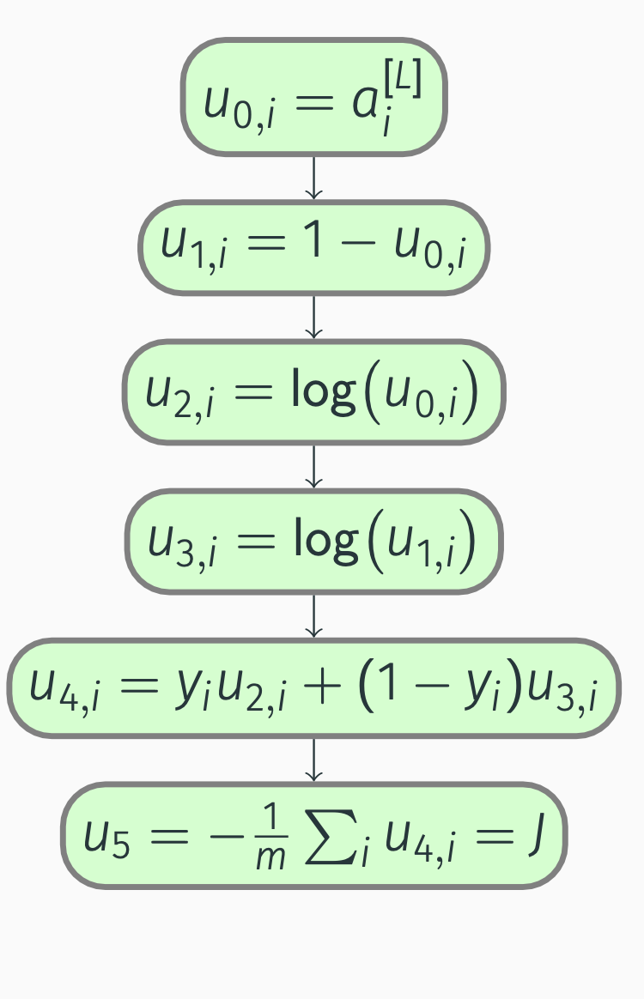Backpropagation: binary cost
Let’s compute derivatives:
\[\begin{align*} \pdv{J}{u_5} &= 1, \; \pdv{J}{u_{4, i}} = \pdv{J}{u_5} \pdv{u_5}{u_{4, i}} = -\frac{1}{m}, \\ \pdv{J}{u_{3, i}} &= \pdv{J}{u_{4, i}} \pdv{u_{4, i}}{u_{3, i}} = -\frac{1}{m} (1 - y_i), \\ \pdv{J}{u_{2, i}} &= \pdv{J}{u_{4, i}} \pdv{u_{4, i}}{u_{2, i}} = -\frac{1}{m} y_i, \\ \pdv{J}{u_{1, i}} &= \pdv{J}{u_{3, i}} \pdv{u_{3, i}}{u_{1, i}} = -\frac{1}{m} (1 - y_i) \frac{1}{u_{1, i}} = -\frac{1}{m} \frac{1 - y_i}{1 - a_i^{[L]}}, \\ \pdv{J}{u_{0, i}} &= \pdv{J}{u_{1, i}} \pdv{u_{1, i}}{u_{0, i}} + \pdv{J}{u_{2, i}} \pdv{u_{2, i}}{u_{0, i}} = \frac{1}{m} (1 - y_i) \frac{1}{u_{1, i}} - \frac{1}{m} y_i \frac{1}{u_{0, i}} = \\ &=\frac{1}{m} \Bigl(\frac{1 - y_i}{1 - a_i^{[L]}} - \frac{y_i}{a_i^{[L]}}\Bigr). \notag \end{align*}\]
Backpropagation: binary cost
Thus,
\[\begin{equation*} \pdv{J}{a_i^{[L]}} = \frac{1}{m} \Bigl(\frac{1 - y_i}{1 - a_i^{[L]}} - \frac{y_i}{a_i^{[L]}}\Bigr), \end{equation*}\]
which implies that
\[\begin{equation} \pdv{J}{\vec{A}^{[L]}} = \frac{1}{m} \Bigl(\frac{1}{1 - \vec{A}^{[L]}} \odot (1 - \vec{Y}) - \frac{1}{\vec{A}^{[L]}} \odot \vec{Y}\Bigr). \end{equation}\]
Backpropagation: binary cost
In addition, since the sigmoid activation function is used in the output layer, we get
\[\begin{equation*} \begin{split} \pdv{J}{z_i^{[L]}} &= \pdv{J}{a_i^{[L]}} a_i^{[L]} (1 - a_i^{[L]}) \\ &= \frac{1}{m} \Bigl(\frac{1 - y_i}{1 - a_i^{[L]}} - \frac{y_i}{a_i^{[L]}}\Bigr) a_i^{[L]} (1 - a_i^{[L]}) \\ &= \frac{1}{m} ((1 - y_i) a_i^{[L]} - y_i (1 - a_i^{[L]})) \\ &= \frac{1}{m} (a_i^{[L]} - y_i). \end{split} \end{equation*}\]
In other words,
\[\begin{equation} \pdv{J}{\vec{Z}^{[L]}} = \frac{1}{m} (\vec{A}^{[L]} - \vec{Y}). \end{equation}\]
Note that both \(\pdv{J}{\vec{Z}^{[L]}} \in \R^{1 \times m}\) and \(\pdv{J}{\vec{A}^{[L]}} \in \R^{1 \times m}\), because \(n^{[L]} = 1\) in this case.
Backpropagation: multiclass cost
In multiclass classification, the cost function is instead given by
\[\begin{equation*} \begin{split} J &= f(\vec{\hat{Y}}, \vec{Y}) = f(\vec{A}^{[L]}, \vec{Y}) \\ &= -\frac{1}{m} \sum_i \sum_j y_{j, i} \log(\hat{y}_{j, i}) \\ &= -\frac{1}{m} \sum_i \sum_j y_{j, i} \log(a_{j, i}^{[L]}), \end{split} \end{equation*}\]
where \(j = 1, \dots, n^{[L]}\). We can vectorize the cost expression:
\[\begin{equation} J = -\frac{1}{m} \underbrace{\sum_{\substack{\text{axis} = 0 \\ \text{axis} = 1}} \vec{Y} \odot \log(\vec{A}^{[L]})}_\text{scalar}. \end{equation}\]
Backpropagation: multiclass cost
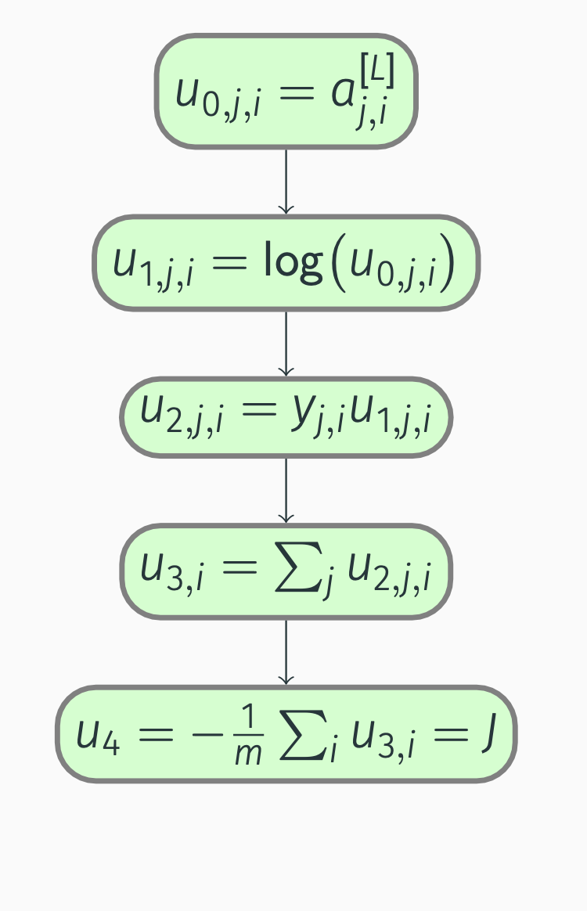Backpropagation: cost
With the computation graph in place, we can perform backward propagation:
\[\begin{align*} \pdv{J}{u_4} &= 1, \\ \pdv{J}{u_{3, i}} &= \pdv{J}{u_4} \pdv{u_4}{u_{3, i}} = -\frac{1}{m}, \\ \pdv{J}{u_{2, j, i}} &= \pdv{J}{u_{3, i}} \pdv{u_{3, i}}{u_{2, j, i}} = -\frac{1}{m}, \\ \pdv{J}{u_{1, j, i}} &= \pdv{J}{u_{2, j, i}} \pdv{u_{2, j, i}}{u_{1, j, i}} = -\frac{1}{m} y_{j, i}, \\ \pdv{J}{u_{0, j, i}} &= \pdv{J}{u_{1, j, i}} \pdv{u_{1, j, i}}{u_{0, j, i}} = -\frac{1}{m} y_{j, i} \frac{1}{u_{0, j, i}} = -\frac{1}{m} \frac{y_{j, i}}{a_{j, i}^{[L]}}. \end{align*}\]
Backpropagation: multiclass cost
Hence,
\[\begin{equation*} \pdv{J}{a_{j, i}^{[L]}} = -\frac{1}{m} \frac{y_{j, i}}{a_{j, i}^{[L]}}. \end{equation*}\]
Vectorization is trivial:
\[\begin{equation} \pdv{J}{\vec{A}^{[L]}} = -\frac{1}{m} \frac{1}{\vec{A}^{[L]}} \odot \vec{Y}. \end{equation}\]
Backpropagation: multiclass cost
Furthermore, since the output layer uses the softmax activation function, we get
\[\begin{equation*} \begin{split} \pdv{J}{z_{j, i}^{[L]}} &= a_{j, i}^{[L]} \Bigl(\pdv{J}{a_{j, i}^{[L]}} - \sum_p \pdv{J}{a_{p, i}^{[L]}} a_{p, i}^{[L]}\Bigr) = a_{j, i}^{[L]} \Bigl(-\frac{1}{m} \frac{y_{j, i}}{a_{j, i}^{[L]}} + \sum_p \frac{1}{m} \frac{y_{p, i}}{a_{p, i}^{[L]}} a_{p, i}^{[L]}\Bigr) \\ &= \frac{1}{m} \Bigl(-y_{j, i} + a_{j, i}^{[L]} \underbrace{\sum_p y_{p, i}}_{\sum \text{probabilities} = 1}\Bigr) = \frac{1}{m} (a_{j, i}^{[L]} - y_{j, i}). \end{split} \end{equation*}\]
Note that \(p = 1, \dots, n^{[L]}\). To conclude,
\[\begin{equation} \pdv{J}{\vec{Z}^{[L]}} = \frac{1}{m} (\vec{A}^{[L]} - \vec{Y}). \end{equation}\]
Backpropagation: multilabel cost
We can view multi-label classification as \(j\) binary classification problems:
\[\begin{equation*} \begin{split} J &= f(\vec{\hat{Y}}, \vec{Y}) = f(\vec{A}^{[L]}, \vec{Y}) \\ &= \sum_j \Bigl(-\frac{1}{m} \sum_i (y_{j, i} \log(\hat{y}_{j, i}) + (1 - y_{j, i}) \log(1 - \hat{y}_{j, i}))\Bigr) \\ &= \sum_j \Bigl(-\frac{1}{m} \sum_i (y_{j, i} \log(a_{j, i}^{[L]}) + (1 - y_{j, i}) \log(1 - a_{j, i}^{[L]}))\Bigr), \end{split} \end{equation*}\]
where once again \(j = 1, \dots, n^{[L]}\).
Backpropagation: multilabel cost
Vectorization gives
\[\begin{equation} J = -\frac{1}{m} \underbrace{\sum_{\substack{\text{axis} = 1 \\ \text{axis} = 0}} (\vec{Y} \odot \log(\vec{A}^{[L]}) + (1 - \vec{Y}) \odot \log(1 - \vec{A}^{[L]}))}_\text{scalar}. \end{equation}\]
Backpropagation: multilabel cost
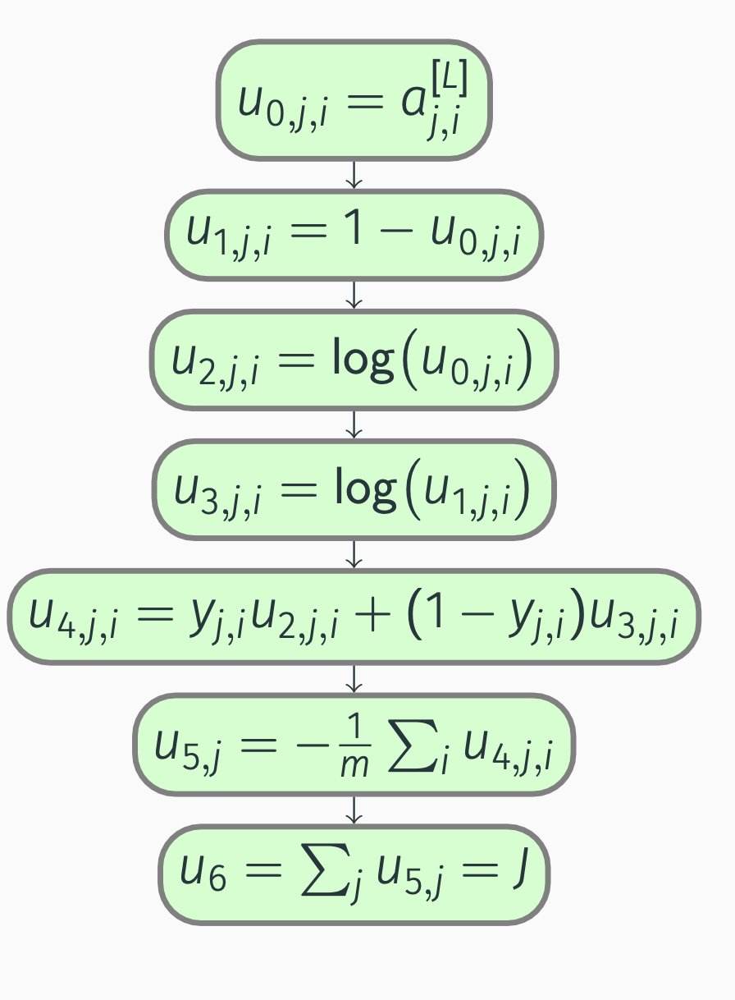Backpropagation: multilabel cost
Next, we compute the partial derivatives:
\[\begin{align*} \pdv{J}{u_6} &= 1, \\ \pdv{J}{u_{5, j}} &= \pdv{J}{u_6} \pdv{u_6}{u_{5, j}} = 1, \\ \pdv{J}{u_{4, j, i}} &= \pdv{J}{u_{5, j}} \pdv{u_{5, j}}{u_{4, j, i}} = -\frac{1}{m}, \\ \pdv{J}{u_{3, j, i}} &= \pdv{J}{u_{4, j, i}} \pdv{u_{4, j, i}}{u_{3, j, i}} = -\frac{1}{m} (1 - y_{j, i}), \\ \pdv{J}{u_{2, j, i}} &= \pdv{J}{u_{4, j, i}} \pdv{u_{4, j, i}}{u_{2, j, i}} = -\frac{1}{m} y_{j, i}, \\ \pdv{J}{u_{1, j, i}} &= \pdv{J}{u_{3, j, i}} \pdv{u_{3, j, i}}{u_{1, j, i}} = -\frac{1}{m} (1 - y_{j, i}) \frac{1}{u_{1, j, i}} = -\frac{1}{m} \frac{1 - y_{j, i}}{1 - a_{j, i}^{[L]}}, \end{align*}\]
Backpropagation: multilabel cost
\[\begin{align*} \pdv{J}{u_{0, j, i}} &= \pdv{J}{u_{1, j, i}} \pdv{u_{1, j, i}}{u_{0, j, i}} + \pdv{J}{u_{2, j, i}} \pdv{u_{2, j, i}}{u_{0, j, i}} \\ &= \frac{1}{m} (1 - y_{j, i}) \frac{1}{u_{1, j, i}} - \frac{1}{m} y_{j, i} \frac{1}{u_{0, j, i}} \notag \\ &= \frac{1}{m} \Bigl(\frac{1 - y_{j, i}}{1 - a_{j, i}^{[L]}} - \frac{y_{j, i}}{a_{j, i}^{[L]}}\Bigr). \notag \end{align*}\]
Backpropagation: multilabel cost
Simply put, we have
\[\begin{equation*} \pdv{J}{a_{j, i}^{[L]}} = \frac{1}{m} \Bigl(\frac{1 - y_{j, i}}{1 - a_{j, i}^{[L]}} - \frac{y_{j, i}}{a_{j, i}^{[L]}}\Bigr), \end{equation*}\]
and
\[\begin{equation} \pdv{J}{\vec{A}^{[L]}} = \frac{1}{m} \Bigl(\frac{1}{1 - \vec{A}^{[L]}} \odot (1 - \vec{Y}) - \frac{1}{\vec{A}^{[L]}} \odot \vec{Y}\Bigr). \end{equation}\]
Backpropagation: multilabel cost
Bearing in mind that we view multi-label classification as \(j\) binary classification problems, we also know that the output layer uses the sigmoid activation function.
As a result,
\[\begin{equation*} \begin{split} \pdv{J}{z_{j, i}^{[L]}} &= \pdv{J}{a_{j, i}^{[L]}} a_{j, i}^{[L]} (1 - a_{j, i}^{[L]}) \\ &= \frac{1}{m} \Bigl(\frac{1 - y_{j, i}}{1 - a_{j, i}^{[L]}} - \frac{y_{j, i}}{a_{j, i}^{[L]}}\Bigr) a_{j, i}^{[L]} (1 - a_{j, i}^{[L]}) \\ &= \frac{1}{m} ((1 - y_{j, i}) a_{j, i}^{[L]} - y_{j, i} (1 - a_{j, i}^{[L]})) = \frac{1}{m} (a_{j, i}^{[L]} - y_{j, i}), \end{split} \end{equation*}\]
which we can vectorize as
\[\begin{equation} \pdv{J}{\vec{Z}^{[L]}} = \frac{1}{m} (\vec{A}^{[L]} - \vec{Y}). \end{equation}\]